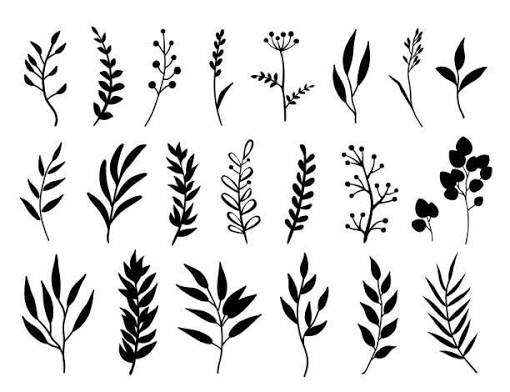
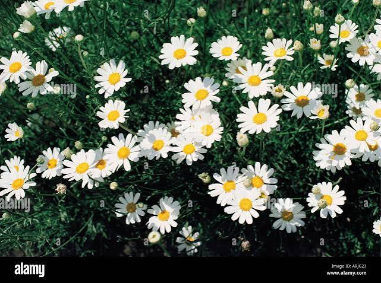
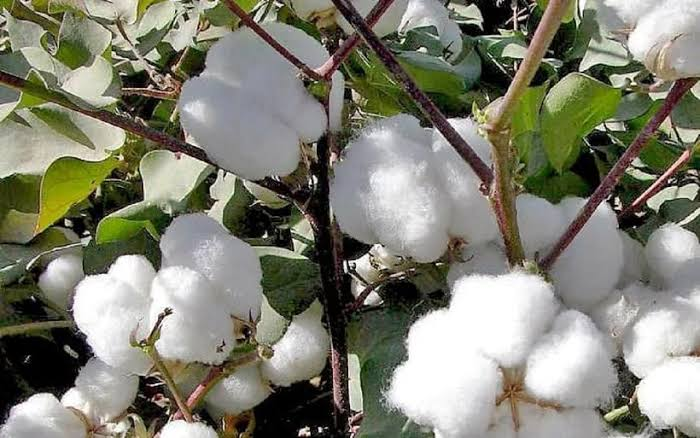

Growing quality pyrethrum and cotton
We promote sustainable farming of pyrethrum and cotton to sopport agricultural productivity and rural livlihoods.

Pyrethrum is grown for its flowers which are processed to produce natturat inscicidal ingridients
cotton is an important fibre crop used in the production of textiles and other products
